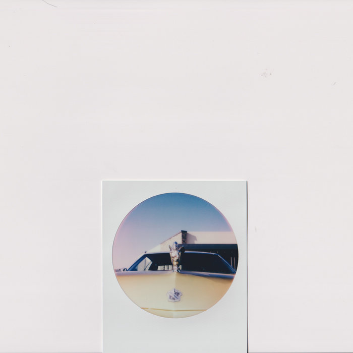
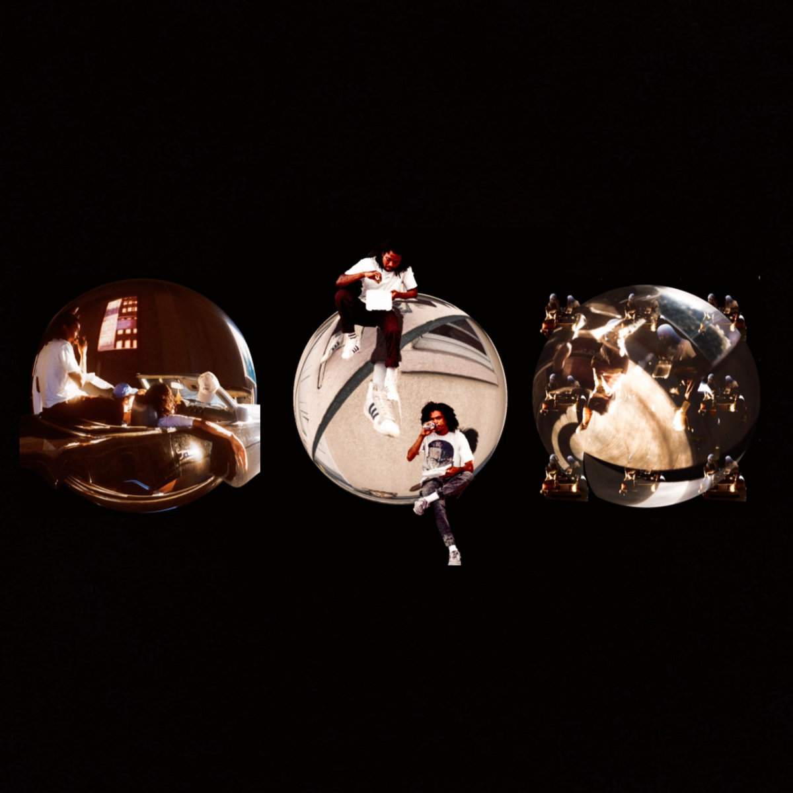

Image Placeholders
Image Placeholders are dummy images used to draw attention without using actual images. Examples of the images used on Low Shoulder are shown below.
Image Examples


Accessibility Considerations
To ensure accessibility, always include descriptive and meaningful alt text for images.
Usage
- Use image placeholders to display a preview of content presented on other pages.
- Links may be nested in images, leading to merchandise pages or artist pages.
<div class="row mb-5 card-example">
<div class="col-xs-12 col-sm-12 col-md-12 col-lg-6">
<div class="card">
<img src="../img/nu.jpeg"
class="card-img-top"
alt="album artwork">
</div>
</div>